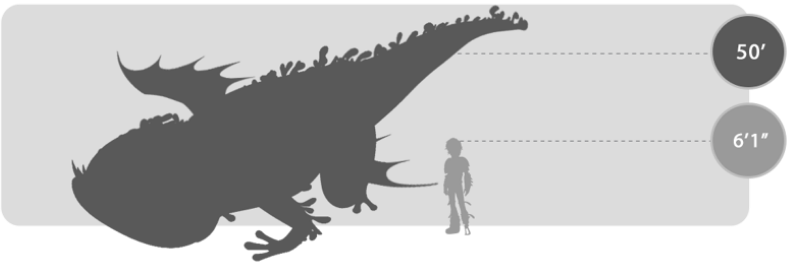
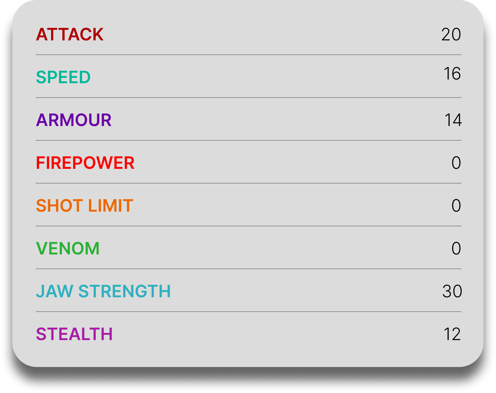

Submaripper
General Overview
The Submaripper is a gigantic dragon belonging to both the Tidal Class and the Tracker Class. Often compared to legendary sea monsters like the Kraken, it is a deep-sea predator capable of controlling the ocean itself. Rather than attacking directly, it uses massive whirlpools and tidal forces to drag prey into its jaws, making it one of the most terrifying dragons of the open sea.


Physical Appearance
- Body & Color: It has a massive, eel-like body with amphibious traits, often colored in green or blue tones with stripes and kelp-like growths along its ◄ BACK.
- Head & Face: Its head is large and rounded with an enormous jaw and teeth said to be the size of Vikings.
- Appendages: It has short, frog-like legs with webbed feet, allowing movement both underwater and on land.
- Wings & Tail: Its wings are small and underdeveloped, while its long, flexible body and tail are built for powerful swimming.
Abilities and Combat
- Whirlpool Vortex: It creates massive whirlpools by sucking water into its mouth, powerful enough to pull down ships and large dragons.
- Tidal Wave Creation: By breaching the surface, it can generate enormous waves capable of overwhelming enemies.
- Debris Attack: Instead of fire, it can expel ingested shipwrecks and harpoon-filled debris at opponents.
- Vibration Tracking: It detects prey through vibrations in the water, allowing it to hunt even without sight.
- Immense Strength: It can crush ships, overpower large dragons, and carry massive weight underwater.
- High Endurance: It can withstand powerful attacks and continue fighting without slowing down.
Behavior and Personality
- Intelligence: It is perceptive and highly reactive to disturbances in its environment.
- Temperament: Despite its terrifying power, it is not naturally aggressive and usually attacks only when threatened.
- Behavior: It remains deep underwater, following vibrations above to locate prey or intruders.
- Social Traits: It is generally solitary and territorial, especially in deep-sea environments.
- Weakness: Its presence can be detected by distinctive foul-smelling bubbles that rise to the surface.